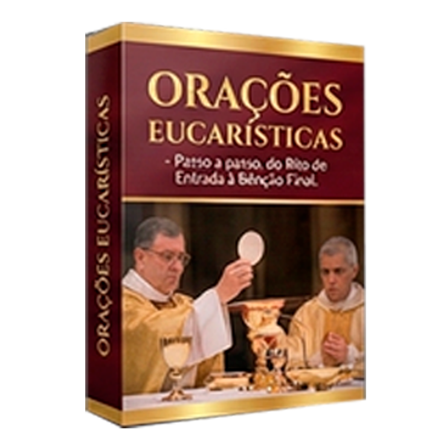
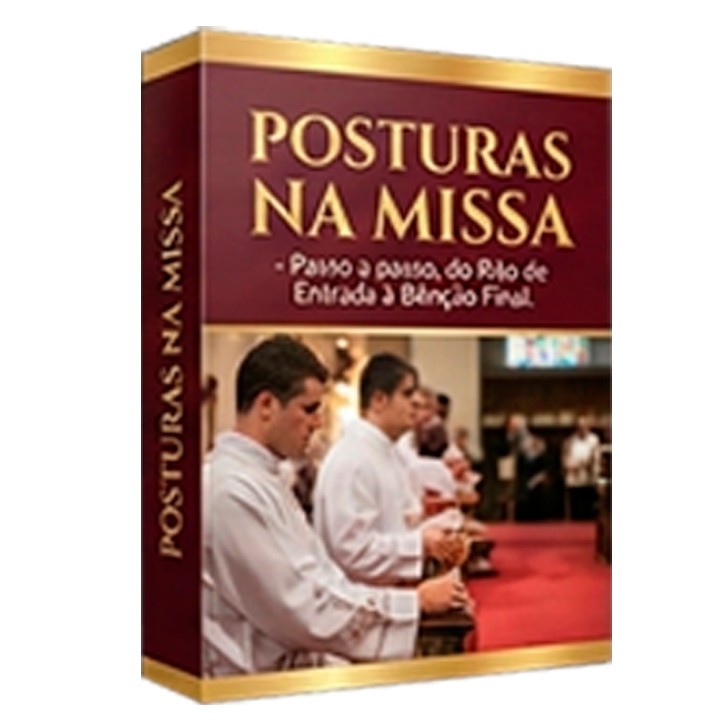

Descubre el significado profundo de cada gesto, oración y ritual de la Santa Misa y vive la fe de forma Consciente
¡QUIERO ENTENDER LA MISA! ✝️Vas a Misa todos los domingos pero sientes que falta algo para conectarte de verdad
Quieres entender los gestos y rituales pero nunca tuviste quien te los explicara
Tienes dudas sobre partes de la Misa pero no sabes a quién preguntar
Un Material Práctico que explica cada parte de la Misa de forma simple y directa.
Cada parte de la Misa explicada en detalle, 100% fiel a la Doctrina Católica y al Catecismo
Descubre lo que hay detrás de cada gesto, palabra y símbolo sagrado
Sin lenguaje teológico complicado, cualquier persona puede leer y entender
Participa de la Misa con total entendimiento y conéctate de verdad con Dios
Descubre la importancia del silencio en la vida espiritual y en la oración
$5.00 GRATIS
Paso a paso para una confesión completa y verdadera
$5.00 GRATIS

Las principales oraciones para antes y después de la Comunión
$5.00 GRATIS

Cuándo sentarse, levantarse y arrodillarse durante la Misa
$5.00 GRATIS

Entiende la conexión entre los dos testamentos en la liturgia
$5.00 GRATIS
Conoce todos los tiempos litúrgicos y sus celebraciones
$5.00 GRATIS
✅ Misa Explicada - Completo
✅ Bono: El Valor del Silencio
✅ Bono: Guía de la Confesión
✅ Bono: Oraciones Eucarísticas
✅ Bono: Posturas en la Misa
✅ Bono: Antiguo y Nuevo Testamento
✅ Bono: Año Litúrgico Completo
✅ Acceso Inmediato
✅ Garantía de 15 Días
De $19.90
$9.90 USD
o en hasta 3 cuotas con tarjeta
🔒 Pago 100% Seguro | 📱 Acceso Inmediato

"Después de leer el ebook, la Misa ganó un nuevo significado para mí. ¡Ahora participo de forma mucho más consciente!"

"Finalmente entendí cosas que siempre tuve curiosidad. ¡Recomiendo para toda familia católica!"

"Lo usé para enseñar a mis hijos y les encantó. Ahora van a Misa con mucho más interés."
Si por cualquier motivo no quedas satisfecho con el material, solo tienes que enviarnos un email dentro de 15 días y te devolvemos el 100% de tu dinero. Sin preguntas, sin burocracia.
¡Tu inversión está 100% protegida!
Después de la confirmación del pago, recibirás un email con el enlace para descargar el ebook en PDF. ¡El acceso es inmediato!
¡Sí! El ebook está en formato PDF y puede ser leído en cualquier dispositivo: celular, tablet, computadora o puedes hasta imprimirlo si prefieres.
¡Sí! Todo el contenido fue desarrollado siguiendo fielmente la doctrina y las enseñanzas de la Iglesia Católica Apostólica Romana.
Tienes 15 días de garantía incondicional. Si por cualquier motivo no quedas satisfecho, solo envíanos un email y te devolvemos el 100% de tu inversión.
¡Sí! Utilizamos una plataforma de pago segura y encriptada. Tus datos están 100% protegidos.
Transforma tu experiencia en la Santa Misa
⏰ Oferta válida hasta: